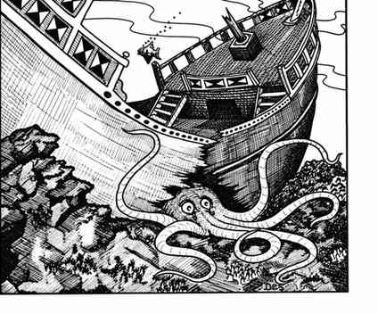

巨型章鱼 · Octopus, Giant
 |
|
巨型章鱼栖息在温暖、浅至中等深度的水域，巢穴位于沉船或海底洞穴。它们夜间捕猎，会攻击游泳者或抓住小船吞食船员；若有机会，数只会合作制服更大的船只，被抓住的船会在 3 轮内失去航速并完全停下。
巨型章鱼通常用 8 条触手中的 6 条攻击，另两条用来固定身体。每条触手命中只造成 1–4 点伤害，若未松开或切断，之后每轮造成两倍初始伤害；喙可咬附近目标造成 2–12 点伤害。通常一个生物同一时间只会被一条触手击中，除非其身高或长度超过 8 尺。被触手击中的生物有 25% 的机会双臂都被钳住，另有 25% 的机会两臂都不被钳住；双臂被钳住时不能用双臂攻击，一臂被钳住时生命骰 −3，双臂自由时生命骰 −1。触手的力量相当于 18/20；力量达到或超过 18/20 的生物可抓住触手并抵消缠绕，但仍不能脱身，章鱼会把目标拖向喙。每条触手需承受 8 点伤害才会断裂，这不计入章鱼本体的 8 个生命骰。若至少 3 条触手被切断，章鱼有 90% 的机会撤退，喷出高 4 寸、宽 6 寸、长 6 寸的墨云遮蔽视线，并改变体色藏入环境。